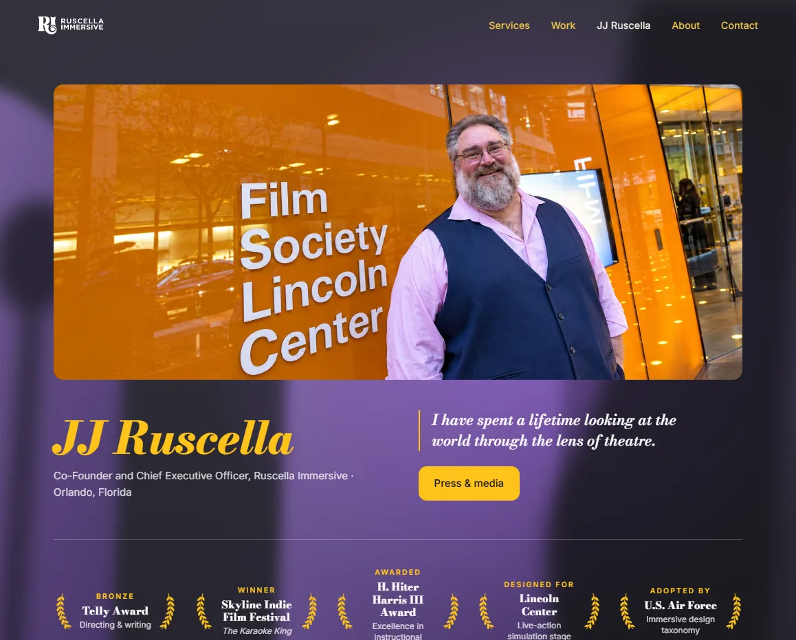

Ruscella Immersive website
Two generations of the website, from building labs to building experiences.

- Client
- Ruscella Immersive
- Company
- Ruscella Immersive (co-founder) · 2024–present
- Role
- Chief Creative Officer and Co-Founder
- Discipline
- Website strategy, design, development, copy
Try the homepage
The live homepage banner. Drag to look around the stage and to swing the light. On a phone, move the phone to look around.
Challenge
The website had to carry a young brand to buyers who had never used immersive technology, then change with the business when buyers moved from lab builds to immersive experiences.
Solution
- Website 1.0 worked as a guide: “Build your own lab. We’ll show you how.”
- Website 2.0 opens on a stage with a ghost light, and leads with the new offer: “We build immersive experiences and make labs.”
- Both generations put the client at the centre, with proof and selected work close at hand.
My role
- Designed and developed both generations of the website: structure, visual content, navigation and messaging
Highlights
